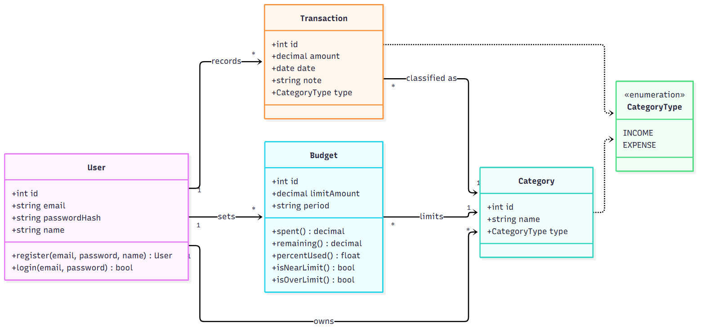
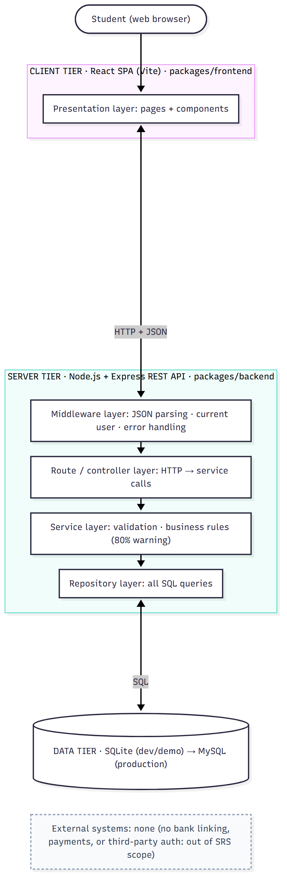
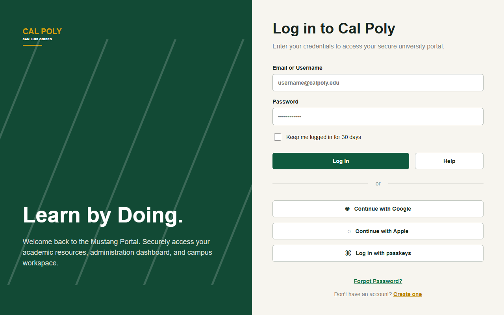
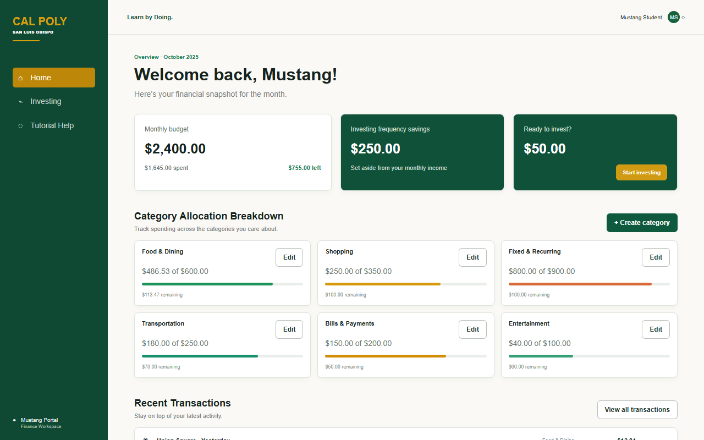

Budget screen

Profile screen
(INSTRUCTION FOR STUDENTS: THIS DOCUMENT SERVES AS THE FORMAL 'CONTRACT' FOR YOUR TEAM PROJECT. IT MUST BE MAINTAINED IN YOUR GITHUB REPOSITORY.)
SOFTWARE REQUIREMENTS SPECIFICATION
INSTRUCTOR: LARA NICHOLS-BROWN
TERM: FALL 2026
SECTION: 11
THE ENGINEERING TEAM:
PROJECT ASSETS:
npm install, then npm run dev)DOCUMENT HISTORY:
| LAST DATE CHANGED | WHO | WHAT WAS CHANGED |
|---|---|---|
| 09/18/2026 | SHREEV B., JUAN S., JUAN F. | TE1: COMPLETE MONOREPO SETUP (PACKAGES/FRONTEND, PACKAGES/BACKEND, PRETTIER, ESLINT, CONTRIBUTING.MD, PROJECT BOARD) |
| 09/25/2026 | SHREEV B., JUAN S., JUAN F. | TE2: ADD PRODUCT VISION AND USER STORIES US-01 TO US-09 |
| 10/02/2026 | SHREEV B. | TE3: ADD UML CLASS DIAGRAM, DATABASE SCHEMA, AND REST API ENDPOINTS (§5), DATA REQUIREMENTS (§7), AND STORY-TO-CLASS TRACEABILITY (§8) |
| 10/02/2026 | JUAN S. | TE3: ADD UI MOCKUPS (BUDGET AND PROFILE SCREENS) AND AN INITIAL UML SKETCH TO THE REPOSITORY (§6) |
| 10/07/2026 | JUAN S. | SET UP THE REACT + VITE FRONTEND PROTOTYPE IN PACKAGES/FRONTEND |
| 10/16/2026 | JUAN F. | BUILD THE WORKING WEBSITE PROTOTYPE: LOGIN, DASHBOARD, TRANSACTIONS, CREATE/EDIT CATEGORY (§6) |
| 10/16/2026 | SHREEV B. | TE4: ADD ARCHITECTURE, HIGH-LEVEL DESIGN, DESIGN PATTERN, AND DESIGN DECISIONS (§5.4). REPLACE TEMPLATE PLACEHOLDER ROWS IN §3 AND §8, FILL IN §4, FIX SECTION NUMBERING |
COURSE: CSC 3100 — INTRODUCTION TO SOFTWARE ENGINEERING
DATE: OCTOBER 16, 2026
TABLE OF CONTENTS
| 1. INTRODUCTION | 1.1 Project Purpose · 1.2 Intended Audience · 1.3 Project Scope |
| 2. USER STORIES | 2.1 User Features · 2.2 Admin Features |
| 3. FUNCTIONAL REQUIREMENTS | |
| 4. NON-FUNCTIONAL REQUIREMENTS | 4.1 Data Integrity & Security · 4.2 Performance & Usability |
| 5. SYSTEM ARCHITECTURE | 5.1 REST API Endpoints · 5.2 Database Schema · 5.3 UML Class Diagram · 5.4 Architecture & Design Patterns |
| 6. USER INTERFACE (UI) | 6.1 Wireframes / Mockups · 6.2 Working Prototype |
| 7. DATA REQUIREMENTS | 7.1 List of Persistent Data |
| 8. TRACEABILITY MATRIX | |
| 9. APPENDICES | 9.1 Repository Documents · 9.2 AI Usage & Disclosure |
USER STORIES FOLLOW THE FORMAT: "AS A [TYPE OF USER], I WANT TO [ACTION] SO THAT [VALUE/BENEFIT]."
| ID | MAIN AUTHOR | REQUIREMENT | PRIORITY |
|---|---|---|---|
| US-01 | SHREEV B. | As a budget-conscious student, I want to log a new expense with an amount, date, category, and description so that I can track where my money goes each day. | 1 |
| US-02 | SHREEV B. | As a working student, I want to record my paychecks and income sources so that my total available monthly funds are accurately calculated. | 1 |
| US-03 | SHREEV B. | As a registered user, I want to edit or delete a past transaction so that I can fix typos or remove duplicate entries. | 2 |
| US-04 | JUAN F. | As a daily user, I want to view a home dashboard showing my total income, total expenses, and remaining balance so that I can see my financial standing at a glance. | 1 |
| US-05 | JUAN F. | As a visual planner, I want to see a chart breaking down my spending by category so that I can identify which areas consume most of my budget. | 2 |
| US-06 | JUAN F. | As a returning user, I want to filter my transaction history by category and date range so that I can quickly find specific past purchases. | 3 |
| US-07 | JUAN S. | As a privacy-conscious user, I want to create an account and log in with an email and password so that my financial records stay private and saved across sessions. | 1 |
| US-08 | JUAN S. | As a user on a strict budget, I want to set a monthly spending limit for individual categories so that I can keep my discretionary spending under control. | 2 |
| US-09 | JUAN S. | As a proactive saver, I want to see a visual warning when my spending exceeds 80% of a category's limit so that I can slow down before going over budget. | 3 |
None in the current scope. LedgerLogic is a single-user personal tool; every user manages only their own data.
THE SYSTEM SHALL...
| ID | REQUIREMENT | STORY | PRIORITY |
|---|---|---|---|
| FR-01 | Allow a user to log an expense with an amount, date, category, and description. | US-01 | 1 |
| FR-02 | Allow a user to record income with an amount, date, income source (category), and description. | US-02 | 1 |
| FR-03 | Allow a user to edit or delete any of their own past transactions. | US-03 | 2 |
| FR-04 | Show a dashboard with the current month's total income, total expenses, and remaining balance. | US-04 | 1 |
| FR-05 | Show a chart of the current month's spending broken down by category. | US-05 | 2 |
| FR-06 | Filter the transaction history by category and by date range. | US-06 | 3 |
| FR-07 | Let a user register and log in with an email and password, and show each user only their own data. | US-07 | 1 |
| FR-08 | Let a user set a monthly spending limit for each expense category and show the amount spent and remaining. | US-08 | 2 |
| FR-09 | Show a visual warning when spending in a category reaches 80% of its limit, and an over-limit state above 100%. | US-09 | 3 |
LedgerLogic is a React single-page app that calls a Node.js/Express REST API. The API is layered: routes (HTTP) → services (validation and business rules) → repositories (SQL) → database. Source: packages/backend/src/ and packages/frontend/src/.
Base URL (local): http://localhost:3001/api. Requests and responses are JSON. Amounts are sent in dollars (amount) and returned in integer cents (…Cents).
| METHOD | URL | DESCRIPTION | STORIES | STATUS |
|---|---|---|---|---|
| GET | /api/transactions?limit=50 | Lists the user's transactions, newest first. | US-01, US-02 | Implemented |
| POST | /api/transactions | Creates an income or expense. Body: { amount, type: INCOME | EXPENSE, categoryId, date: YYYY-MM-DD, note }. Returns 201, or 400 with a list of validation errors. | US-01, US-02 | Implemented |
| GET | /api/budgets/summary?period=YYYY-MM | Monthly totals (income, expenses, balance) and, per budgeted category: limit, spent, remaining, percent used, status (ok / warning / over). | US-04, US-08, US-09 | Implemented |
| GET | /api/categories | Lists the user's income and expense categories. | US-01, US-02 | Implemented |
| PUT / DELETE | /api/transactions/:id | Edits or deletes a transaction. | US-03 | Planned |
| GET | /api/transactions?category=&from=&to= | Filters history by category and date range. | US-06 | Planned |
| GET | /api/reports/spending-by-category | Expense totals per category for the chart. | US-05 | Planned |
| POST | /api/auth/register, /api/auth/login | Creates an account and logs in (bcrypt password hash). | US-07 | Planned |
| POST / PUT | /api/budgets | Sets a category's monthly limit. | US-08 | Planned |
Defined in packages/backend/src/db/schema.sql. Development and demos use SQLite (built into Node.js, so no database server is needed); every table and column maps one-to-one to MySQL for production.
| TABLE | COLUMNS | KEYS / CONSTRAINTS |
|---|---|---|
| users | id, email, password_hash, name, created_at | PK id; email UNIQUE |
| categories | id, user_id, name, type | PK id; FK user_id → users; type IN (INCOME, EXPENSE); (user_id, name) UNIQUE |
| transactions | id, user_id, category_id, type, amount_cents, date, note, created_at | PK id; FK user_id → users; FK category_id → categories; amount_cents > 0; index on (user_id, date) |
| budgets | id, user_id, category_id, period (YYYY-MM), limit_amount_cents | PK id; FK user_id → users; FK category_id → categories; limit > 0; (user_id, category_id, period) UNIQUE |

| CLASS | RESPONSIBILITY | STORIES |
|---|---|---|
| User | A registered student who owns all of their data. register(), login(). | US-01, US-02, US-07 |
| Category | A user-defined bucket (e.g. Groceries, Part-time Job) typed INCOME or EXPENSE. | US-01, US-02, US-05, US-06, US-08 |
| Transaction | One income or expense: amount, date, note, type, category. | US-01 – US-06 |
| Budget | Monthly limit for one category. spent(), remaining(), percentUsed(), isNearLimit() (≥ 80%), isOverLimit(). | US-08, US-09 |
| CategoryType | Enumeration: INCOME, EXPENSE. | US-01, US-02 |
Dashboard totals (US-04) and the category chart (US-05) are computed from Transactions rather than stored.
Full write-up with all TE3 and TE4 diagrams: docs/design/LedgerLogic-Design-Document-TE3-TE4.pdf in the repository.
|  |
Mobile mockups by Juan S. showing the Budget screen (monthly budget, category bars, over-budget state) and the Profile screen.
Budget screen |
Profile screen |
React prototype by Juan F. (packages/frontend). It currently uses sample data; connecting it to the API above is the next step.
 Login |
 Dashboard: monthly budget, category limits, recent transactions |
| DATA | FIELDS | SOURCE | RULES |
|---|---|---|---|
| User account | email, password hash, display name | Registration form (US-07) | Email unique; password stored only as a salted hash. |
| Category | name, type (INCOME / EXPENSE) | Defaults per user; Create Category screen | Name unique per user. |
| Transaction | amount, type, category, date, note | Add-transaction form (US-01, US-02) | Amount > 0 and ≤ $1,000,000; valid date; category must belong to the user and match the type; note ≤ 200 characters. |
| Budget | category, month (YYYY-MM), limit amount | Create / Edit Category screen (US-08) | One budget per category per month; limit > 0. |
Computed on request (not stored): monthly totals, remaining balance, percent of budget used, budget status, spending by category.
Code locations are relative to packages/backend/src/.
| ID | REQUIREMENT | CLASSES | LINE OF CODE | UI SCREEN | STATUS |
|---|---|---|---|---|---|
| US-01 | Log an expense | Transaction, Category | routes/api.js:22 (POST /transactions); services/transactionService.js:10; db/schema.sql:21 | Dashboard, Transactions | API done; UI form next |
| US-02 | Record income | Transaction, Category, CategoryType | services/transactionService.js:19 (INCOME / EXPENSE); routes/api.js:13 (GET /categories) | Dashboard, Transactions | API done; UI form next |
| US-03 | Edit / delete a transaction | Transaction | Planned | Transactions | Planned |
| US-04 | Dashboard totals and balance | Transaction | routes/api.js:26 (GET /budgets/summary); services/budgetService.js:12; repositories/transactionRepository.js:20 | Dashboard (budget card) | API + UI prototype |
| US-05 | Spending-by-category chart | Transaction, Category | repositories/transactionRepository.js:25 (spent by category query) | Dashboard | Data ready; chart planned |
| US-06 | Filter history | Transaction, Category | Planned | Transactions | Planned |
| US-07 | Account and login | User | db/schema.sql:5 (users table); app.js:19 (demo user stands in) | Login | UI prototype; auth planned |
| US-08 | Category spending limits | Budget, Category | db/schema.sql:33 (budgets); domain/budget.js:4 (remaining), :8 (isOverLimit) | Dashboard, Create / Edit Category | API + UI prototype |
| US-09 | Warning at 80% | Budget | domain/budget.js:2 (WARNING_THRESHOLD = 0.8), :13 (budgetStatus) | Dashboard (category bars) | API done; UI warning next |
README.md: how to install and run the app, and the API referencedocs/uml/: UML class diagram (Mermaid source + PNG) and story-to-class traceabilitydocs/architecture/: layered architecture notes and design patterns with file referencesdocs/design/LedgerLogic-Design-Document-TE3-TE4.pdf: design document with all TE3 (UML) and TE4 (architecture, high-level design, design pattern) diagramsdocs/srd/LedgerLogic-SRD.pdf: this document